🐢 WINC Clinical Operator Manual (v11.5)
Author: Kevin Howland | Target Audience: Volunteer Clinicians | Level: Beginner
Welcome to the WINC Turtle Incubator Vault!
This manual is your complete, step-by-step guide to using the system. It is designed to be simple, clear, and easy to follow.
1. SIGN-IN: STARTING YOUR SHIFT
Recording clinical data begins with identifying yourself to the database. This ensures that every entry is linked to a specific observer for accountability and forensic audit purposes (See Figure 1).
Figure 1: Sign-In Screen with Observer Registry
1.1 The Shift Start Protocol
- Select Your Name: Pick your name from the observer registry. If your name is missing, contact your System Administrator to be added to the Observer Registry.
- Sign-In: Click [START] to begin your session. The system will timestamp your entry and begin your shift clock.
- The 4-Hour Rule: The system keeps you signed in for 4 hours of active work.
- Inactivity: After 4 hours of inactivity, the system will automatically terminate your session to prevent unauthorized entries if a tablet is left unattended.
- Shifts Longer than 4 Hours: If your shift exceeds this limit, simply re-sign in to refresh your token.
1.2 The Handover Procedure
When rotating staff (Shift Change), it is critical to [TERMINATE] your session before handing the device to the next clinician. This ensures that observations are not misattributed in the audit trail.
1.3 Documentation Conventions
To help you find information fast, we use a specific "Visual Logic" system:
| Style | Clinical Meaning |
|---|---|
| BRIGHT BOLD | This is a real thing you see on the screen. It might be a button like [SAVE] or a field like Intake ID. |
Monospace Code |
This is a computer-specific code (like a Subject ID BL-2026-001) that must be read exactly as written. |
| 📘 NOTE | Helpful advice that makes your work faster or easier. |
| 🛑 IMPORTANT | A MANDATORY rule. Breaking this rule may risk the life of an embryo. |
| ⚠️ CAUTION | An action that might delete data or cause a system error. |
2. NEW INTAKE: ESTABLISHING CASES
When a turtle is found and eggs are collected, we must add the new records to the database. This creates a permanent digital history for the intake case, the plastic bin, and every individual egg (See Figure 3).
2.1 Clinical Logic: Choosing the Intake Path
Not every turtle arrives in the same way. Use the flowchart below to decide which path to take before you touch the screen (See Figure 2).
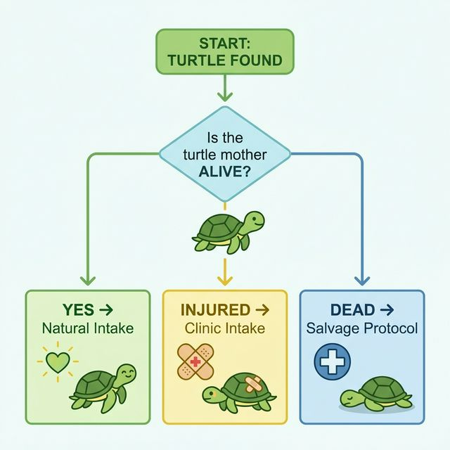
Figure 2: Intake Logic Flowchart2.2 Standard Clinical Intake Workflow
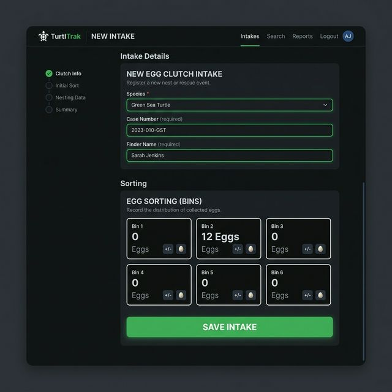
Figure 3: New Intake Form with Biological Metrics2.1 The "Sovereign" Species ID
- Species Identification: Click the Species box. Choose the correct turtle type (e.g., Blanding’s or Wood Turtle).
-
Intake Metrics:
- Intake Weight (g): Record the weight using the digital bench scale.
- Carapace Length (mm): Measure the Straight Carapace Length (SCL). (See Figure 4).
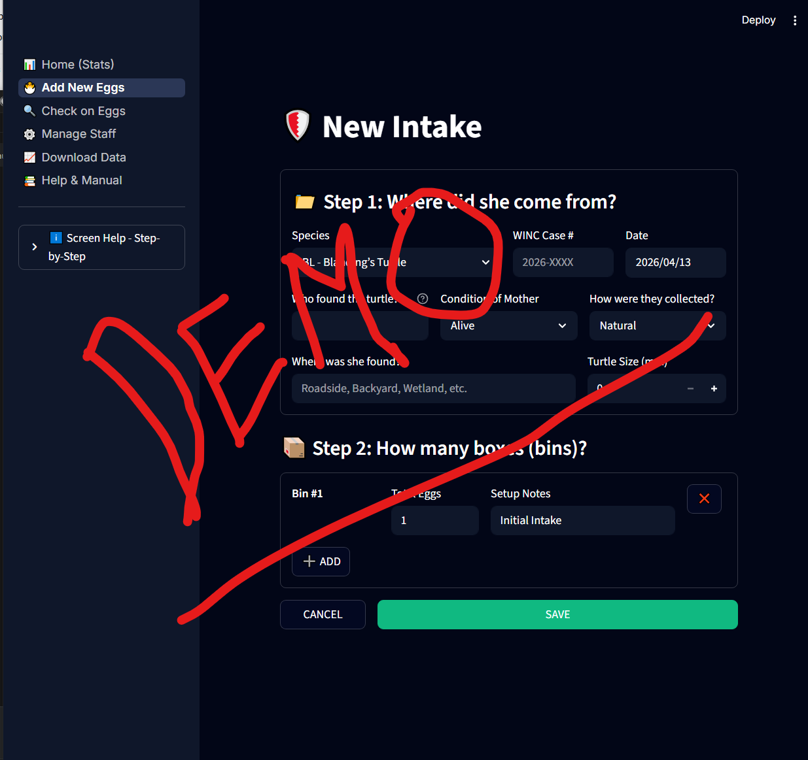
Figure 4: Carapace Measurement Technique Diagram -
Assign WINC Case #: Type the year and the sequence number (e.g.,
2026-003).
2.2 Supplemental Intake (Multiple Bins)
Sometimes a turtle lays more eggs than will fit in one plastic bin.
Scenario: Adding Bin 2 to an Existing Case
- Navigate to the Daily Checks screen.
- In the Sidebar expansion, use the Add a Bin to a Case tool.
- Choose the matching Intake ID and click [ADD].
- Result: The system links both bins to the same biological intake for seasonal tracking.
🛑 IMPORTANT: INTAKE ID VERIFICATION: Before clicking [SAVE], look at the physical tag on the turtle (See Figure 5). Ensure it matches the Intake ID you selected in the app. Choosing the wrong ID will link your 30 eggs to the wrong biological parent in the permanent cloud records.
Figure 5: Intake Tag Verification Protocol
3. DAILY CHECKS: THE CLINICAL WORKBENCH
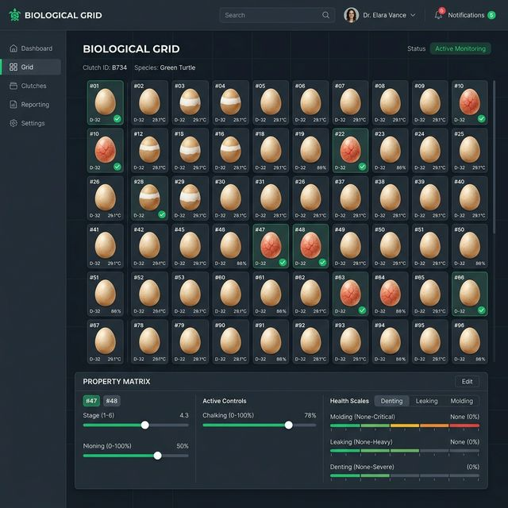
Figure 6: Daily Checks Dashboard with Bin FocusThis screen is the core of our clinical workflow (See Figure 6). It ensures that every subject is monitored daily and that the environment remains within biological limits.
3.1 The Sidebar: Supplemental Tools
Before starting your rounds, check if any supplemental data needs to be added via the Sidebar (left-hand panel).
- Add a Bin to a Case: Use this if a turtle laid a second clutch or if you are splitting a large clutch. Select the Intake/Case, type the New Bin ID, and click [ADD].
- Add Eggs to Existing Bin: If missed eggs are found, select the Target Bin, enter the Eggs to Add, and record the New Post-Append Mass (g). Click [SAVE] to recalibrate the bin's target weight.
3.2 The Weighing Protocol (Clinical Unlock)
Before the system allows you to check individual eggs, you must perform an "Environment Sync." This ensures we never skip bin maintenance.
Physical Step 1: Retrieval
- Locate the bin in the incubator.
- Check the physical label against the Current Bin Focus dropdown in the app.
- ⚪ White Icon: No eggs have been checked yet.
- 🌓 Half-Moon: Some eggs are done, others are pending.
- 🟢 Green Icon: All eggs in this bin are completed.
- Carefully move the bin to the weighing station. Do not jar or shake the bin.
Physical Step 2: Weighing
- Place the bin on the scale. Read the Total Mass in grams.
- On-Screen Action: Type this value into the Current Total Mass (g) field.
Physical Step 3: Hydration Calibration
- The system displays the Last Recorded Weight.
- Calculate the delta. Add the required volume of distilled water using a pipette.
- On-Screen Action: Enter the volume added in the Actual Water Added (ml) field.
Physical Step 4: Submission
- Click the [SAVE] button below the weight fields.
- Result: The weight is recorded, and the Egg Observation Grid will automatically unlock.
3.3 Biological Mandate: NEVER ROTATE
🛑 IMPORTANT When you pick up an egg to check it, NEVER TURN IT OVER.
- Embryos attach to the top of the shell early in development.
- If you flip the egg (rotation), the embryo will be crushed or drowned by the yolk.
- Correct Handling: Lift the egg vertically. Keep the "Top" (identified by the white chalking patch) facing up at all times.
3.4 Navigating the Egg Observation Grid
Once [SAVED], you will see a visual representation of every egg in the bin, arranged in a grid.
Selection Logic:
- Manual Selection: Click individual egg icons. They will show a Blue Border.
- [START] Button: Click this at the top of the grid to automatically select all eggs that haven't been checked yet today. This is the fastest way to begin a session.
Clinical Legend: Developmental Milestones Use this guide to assign the correct clinical status. The system now uses a Milestone + Diagnostic Marker model to track biological velocity (See Figure 6.1).
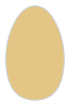
S1: Intake (Diagnostic: —): Initial date added to the system; baseline metabolic state.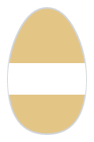
S2: Calcification: Initial calcification phase.S2S: Initial whitening/chalking spot at the shell apex (Spot).S2B: Chalking has expanded into a distinct horizontal band (Band).S2F: Maximum calcification; shell is matte white (Full / Joint-Covering).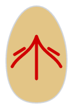
S3: Veins (Diagnostic: —): Vascularization: Branching veins clearly visible via candling.- S4: Development: Advanced embryonic growth.
S4C: Early embryonic curve visible; "shrimp" stage (C-Stage).S4T: Advanced development; shell is largely occluded/dark (Term).S4M: Internal somatic movement or twitching detected (Motion).- S5: Pipping (Diagnostic: —): Eclosion: First cracks or triangle breach in shell.
- S6: Hatching: Final transition to animal status.
S6-YA1: Hatched; Full Yolk Sac external.S6-YA2: Hatched; Half Yolk Sac absorbed.S6-YA3: Fully Absorbed (Buttoned-up). READY TO EXPORT.
🛑 CRITICAL BIOSECURITY GATE: THE YA-3 REQUIREMENT Individual subjects are STRICTLY PROHIBITED from WormD Export or system retirement until the S6-YA3 (Fully Absorbed / Buttoned-up) status is achieved.
- Risk: Exporting during YA1 or YA2 exposes the yolk sac to environmental pathogens, leading to fatal sepsis.
- Clinical Mandate: Observers must visually confirm the closure of the plastron umbilicus before assigning the YA-3 code. The "Export" button will remain software-locked until this clinical signature is present.
3.5 The Property Matrix: Entering Clinical Data
Once eggs are selected, the Property Matrix panel appears at the bottom of the screen.
- Milestone Selection: Choose the Major Milestone (e.g., S2: Calcification).
- Diagnostic Marker: If applicable, select the sub-stage code (e.g.,
S2Bfor Band). - Clinical Backdating: Use the date selector if the observation occurred on a previous shift.
- Note: An egg is only eligible for WormD Export once it reaches the site-configured minimum (Default: S6-YA3).
- Chalking Rating: Select None, Small, Medium, or Major based on white calcium coverage.
- Vascularity (+): Check this box if red veins are visible during candling.
- Clinical Health Scales (0-3):
- Molding: 0 (None) to 3 (Aggressive growth).
- Leaking: 0 (Dry) to 3 (Ruptured).
- Denting: 0 (Firm) to 3 (Collapsed).
- Notes:
- Permanent Egg Notes: Use for long-term traits (e.g., "Odd shell texture").
- Shift Observation Notes: Use for today's specific notes (e.g., "Slightly damp").
3.6 Final Commitment
- Review your entries in the Matrix.
- Click the big [SAVE] button at the bottom.
- Result: The grid icons will turn Green (✅) and your data is locked into the Activity Log at the bottom of the page.
3.7 Species-Specific Alert Thresholds
Use this table to double-check system alerts if the background turns Red:
| Species | Optimal Temp | Critical Temp | Humidity Target |
|---|---|---|---|
| Blanding's | 85.1°F | < 78.8°F / > 91.4°F | 85% |
| Wood Turtle | 82.4°F | < 77.0°F / > 89.6°F | 90% |
| Painted | 84.2°F | < 78.8°F / > 91.4°F | 80% |
4. LIFECYCLE: SURVIVAL BENCHMARKS
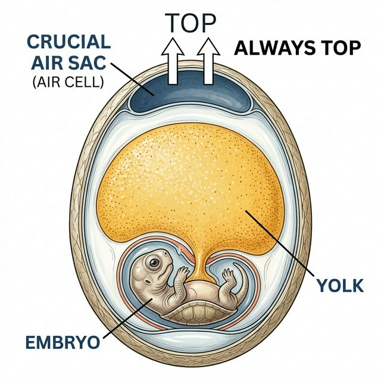
Figure 7: Egg Cross-Section Biological DiagramUnderstanding the biological timeline is critical for survival (See Figure 7). The system uses these codes to project hatching dates and set "Stress Alert" thresholds.
4.1 The "Never Rotate" Mandate
🛑 IMPORTANT Embryos attach to the top of the shell early. If you flip the egg, the embryo will be crushed or drowned by the yolk. Always maintain "Top-Up" orientation during S1 to S5.
4.2 S6 Hatchling Vitality
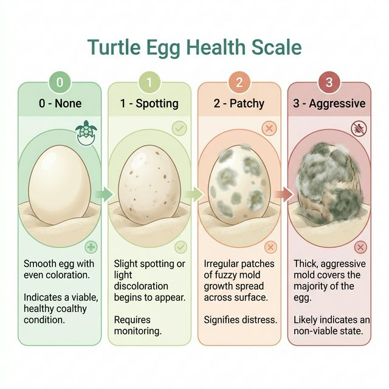
Figure 8: Hatchling Vitality Indicators ChartWhen an egg pips, it is no longer an "Egg" but an "Animal" (See Figure 8). Use the Shift Observation Notes to record a Vitality Score (0-5) based on movement and yolk sac absorption.
5. VAULT ADMINISTRATION: MAINTENANCE
Figure 9: Vault Administration Dashboard - Observer Registry
The WINC Vault is an "Immutable Archive" (See Figure 9). Error correction requires a forensic audit trail to ensure data remains scientific-grade.
5.1 The Resurrection Vault
Figure 10: Resurrection Vault - Ghost Data Alert View
If a bin was accidentally retired (deleted), use the Resurrection Vault to restore it (See Figure 10).
- Ghost Data: If eggs are "orphaned" (active eggs in a deleted bin), the system will flag them in red for immediate clinical reconciliation.
📈 6. EGG REPORTS & ANALYTICS: DATA GOVERNANCE
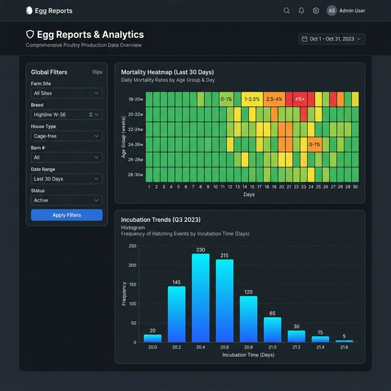
Figure 11: Analytics Dashboard - Mortality HeatmapThe WINC Vault translates raw timestamps into biological insights (See Figure 11).
6.1 The WormD Export Bundle
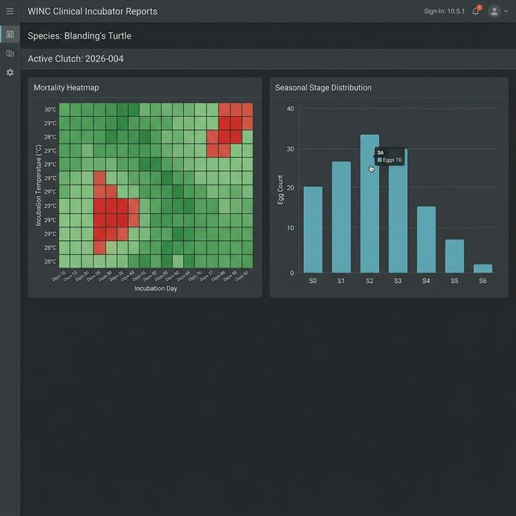
Figure 12: WormD Export Preview InterfaceWhen preparing data for external intake, choose your JSON Payload flags carefully (See Figure 12).
🆘 7. CRISIS: WHEN THE INTERNET FAILS (CONTINUITY)
Field tablets rely on Wi-Fi or Cellular data. If the connection drops in the middle of a check, follow this Resilience Protocol.
7.1 The Resilience Protocol
- ⚠️ DO NOT REFRESH: If you refresh the browser while the internet is "Red," you will lose the data currently in your tablet's local memory.
- Switch to Paper: Immediately pull out your Physical Field Sheets (v2026). Record all weights and health scores by hand.
- The Double-Witness Rule: Once the internet is restored, you must type the paper logs into the software. A second person (the "Witness") must sit next to you and check your typing against the paper to ensure there are no Subject ID typos.
Figure 13: Crisis Offline Indicator
8. GLOSSARY
- Automatic Record Creation: The background system that creates egg records immediately after an Intake is saved.
- Chalking: The white calcium patches on the shell indicating embryo development.
- Correction Mode: A secure state that allows observers to void incorrect entries.
- Local Data Storage: The fact that our data lives in our local database, not a third-party commercial cloud.
- Egg: An individual developing turtle subject.
- Sign-In: The process of identifying yourself to the database to start a shift.
- Voiding: Marking an entry as incorrect without deleting it from the audit log.
- WormD: The standard scientific format for exporting turtle health data.
WINC Clinical Documentation © 2026
Release v10.6.0 | April 13, 2026 - 03:25 | Clinical Excellence. Failure-Proof.
Note on New Intake Fields (Update): When processing a new intake, operators must now record the Mother's Weight (g) and the number of Days in Care prior to formal facility admission.